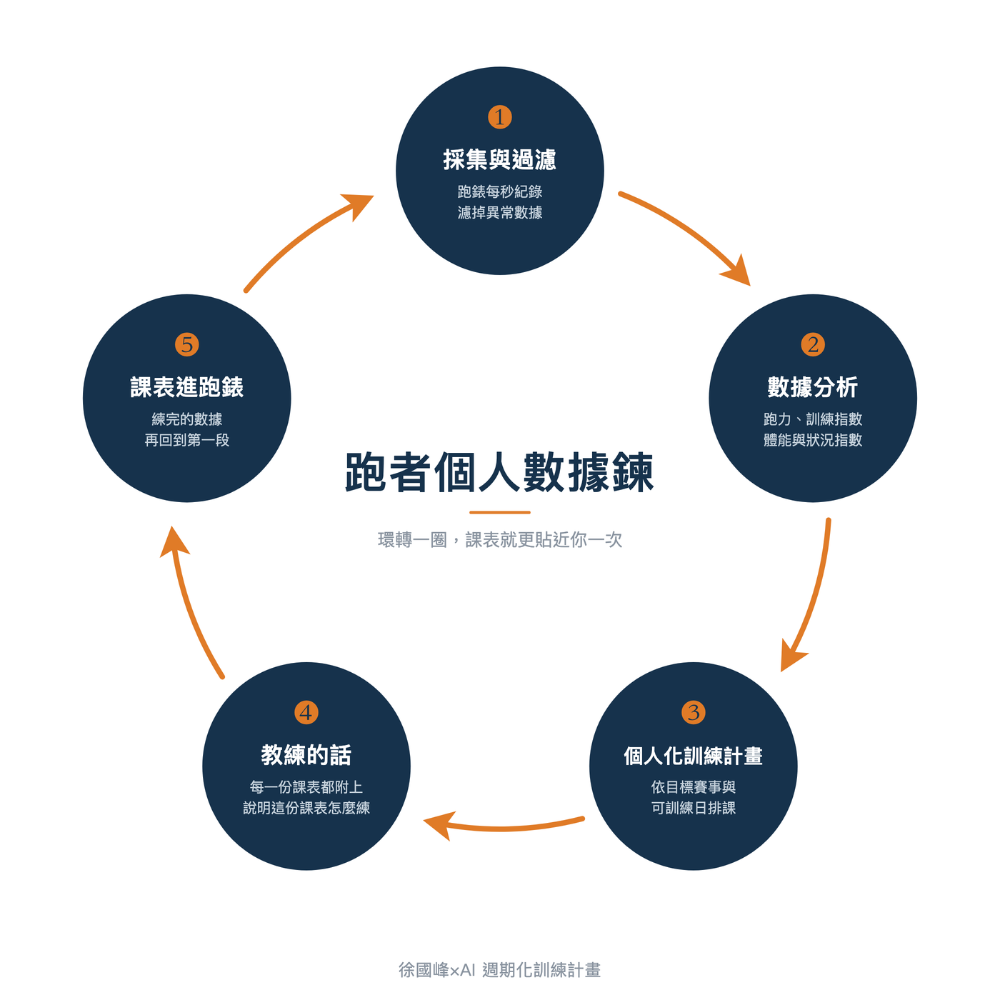

把跑步的數據→課表→教練指導串成一條「數據鍊」｜週期化訓練計畫上線
力學上有動力鍊，力量從一個關節傳到下一個關節，整條鍊順了，動作才有效率；產業上有產業鍊與生態系，晶片從設計、製造到封裝測試，一環扣著一環，少掉任何一段，整條生產鍊就會斷掉。
我對跑步數據到課表與訓練的想像也是一樣的。
我一直想把跑步的數據「鍊」成一個封閉的環，讓數據到個人化課表，到教練指導與修正課表，再透過訓練回到數據，形成一個可持續進化的「跑者個人數據鍊」。

（跑者個人數據鍊的五段循環。練完的數據再回到第一段，這個環每轉一圈，課表就更貼近跑者當下的狀況。）
做個人化的訓練計畫，週期化當然是最終的目的。但週期化與個人化是兩件事：早期打造的耐力網做到了週期化，卻做不到個人化，癥結就在於數據沒有串成一條鍊。
課表要做到個人化且能動態調整的關鍵，在於數據能不能串成一條鍊。
數據沒有串起來，課表就只能一次寫死。寫完之後，跑者練得如何、身體吸收了多少、這一週是進步還是累積了太多疲勞，系統不知道，自然也無從調整。
數據串成一個環之後，課表才會跟著跑者當下的狀況一起移動。
這個數據鍊的資料流如下：
❶ 跑者戴著跑錶或感測器訓練，把數據收集下來。
❷ 演算法分析這些訓練數據，去了解跑者的訓練時數、訓練負荷、跑步實力、心率區間與配速區間……等個人化資料。
❸ 依照跑者自己選定的訓練日，以及置頂的那一場目標賽事，從比賽當天往回推算，排出一份個人化又週期化的課表。
❹ 每一份課表都附上說明這份課表的重點為何，怎麼練的品質最高。
❺ 跑者照著課表繼續訓練（RQ 的課表可以傳進跑錶中），每一筆紀錄又回到系統裡。使用者若把這筆紀錄與當天的課表配對，AI 的回饋就會從照表操課的角度分析這一次訓練得如何，並給跑者指導。
❻ 回到第❶點：跑者再戴著跑錶去練，採集新的數據。
進入下一輪數據鍊，系統再依照實際完成的訓練，調整接下來的課表。這個環一轉起來，課表就不再是我在某一天寫好、之後不再改變的東西。它會一直被跑者自己跑出來的數據滾動式修正。
▎第❶段：過濾數據：先把異常數據濾掉！
這條鍊的第一段是採集：跑者戴著跑錶去跑，有些人身上還有跑步技術動態的感測器，每一秒的心率、配速與距離都收進來。
採集完的第一步是過濾：把無用的數據與異常的數據挑掉。GPS 飄移的那幾百公尺、心率帶接觸不良瞬間飆到 250 以上的那幾秒不可能發生的數據、或鑽進隧道後整段失去訊號的距離，這些東西留在裡面，後面算出來的每一個指數都會跟著偏掉。
這是一段門檻很高、外面卻看不見的打底工作：如何從一堆原始數據裡，把不能用的部分挑乾淨。RQ 在這一塊累積了十年的功力。這十年沒有做出什麼華麗的功能，卻決定了後面每一步的準確度。
▎第❷段：分析，把跑步原始數據算成重要指數
濾完之後才進到分析。那十年的基本功，大半花在這一段：同一批心率與配速要換算成哪些指標、怎麼算才站得住腳，後面的個人化課表才做得出來。
▹ 跑力分析：把各個距離的成績換算成跑力，看出跑者的實力落在哪裡、哪一個距離最弱。
▹ 訓練指數分析：每一秒的強度乘上時間累積起來，再加距離加成，算出這一趟的訓練量。
▹ 體能指數與疲勞指數：體能指數是 42 天指數加權的日均訓練指數，相減就是狀況指數。
▹ 心率區間與配速區間：系統自動判斷該用心率還是配速算強度，配速區間跟著跑力更新。
❝ 個人化的大前提，是系統看得見跑者過去練了什麼。 ❞
二〇一四年，我們創立了耐力網，那時候我就想做線上的個人化訓練計畫。
現在回頭看，我們一開始想做得太多，走得太遠也太快了：一次就想把跑步、游泳、自行車、鐵人三項，甚至重量訓練的個人化課表全部做出來。但更根本的問題在於手上沒有使用者的數據。沒有數據，系統無從得知這位跑者過去練了什麼，能參考的只剩問卷上那幾個欄位，排出來的課表當然稱不上個人化。
這件事我從那時候就想完成，現在回想起來當時是蠻天真的！後來有了數據鍊的概念，經貴人相助，創立 RQ，一開始就先專注投入「分析」那一段，這也是這條數據鍊中最關鍵的基礎工程→「個人化數據分析」。
▎第❸段：排出個人化訓練計畫
這條鍊的第三段，是把分析的結果拿來產生訓練計畫。這是最複雜的一段，也是需要更多運動科學介入的一段。所以花了最長時間才上線。
我們於今年中先上線的是單次課表，可以自動產生今天或明天的一份課表；上禮拜完成上線的，是整份的週期化課表。
建立時要確認幾件事：
▹ 確認目前分析出來的數據：近四週的平均週訓練量與每週訓練天數、目前的跑力，以及各距離裡最弱的那一項。這些數字是後面所有推算的基準，全部來自跑者自己的訓練紀錄；看到不對的地方，要先回去把紀錄更新過再回來建立計畫。
▹ 目標賽事的距離：目前開放 5 公里、10 公里、半程馬拉松、全程馬拉松四種。
▹ 目標賽事的日期：比賽是哪一天。
▹ 可以訓練的日子：想練一三五加禮拜天、想練二四六、或者七天都練都可以，哪一天休息、哪一天排恢復跑，都由跑者自己勾選。
填完之後，系統就依照跑者能練的日子與那一場比賽，把中間這段時間排成一份週期化的課表。這份課表是從跑者過去在 RQ 累積的訓練數據算出來的，累積得愈多，算得愈貼近個人的需求；過去的數據不夠，系統也就沒辦法算得準。
若你完全沒數據，還是可以創建計畫，但要靠自填一些基本訓練數據。
▎第❹段：每一份課表，都會附上一段「教練的話」
課表排出來之後，每一份課表上都會附一段「教練的話」，用我的邏輯說明這份課表要練的是什麼、練的時候要留意哪些地方。
這一段字數不多，卻是整條鍊裡最難做的部分。難的地方有下面這幾個：
▹ 同一種課表，在不同時間點的意義會反過來。一樣是間歇課表，在平常的訓練週練的是速度知覺與技術，放到賽前減量週，要減的是量，不是強度，連「第一趟先慢一點」這個提醒，背後的理由都不一樣。所以課表類型的說明只能當預設值，碰到週期的脈絡，同樣類型的課表的訓練指導就得被改寫。
▹ 「減量」這兩個字在兩套系統裡的意思剛好相反。單次課表的減量是「你最近練得太多，先恢復」；週期化計畫的減量是「準備比賽，讓身體恢復到賽前最佳狀態」。
▹ 最後是語氣與用字。字數限定、要接近我跟學員說話的語氣、配速怎麼寫、哪些詞不用，全部都得寫成規則。
為了處理這些狀況，「教練的話」被拆成十幾份規則：共用的語氣與寫法一份、每一種課表結構各一份、當下的排課脈絡與整期的週期脈絡分開寫、休息日與測驗日各一份，最後再加上一層用字潤稿與一份用語守則。每產生一段教練的話，系統只會挑其中幾份組裝起來，每一份都各自留著版本，改一次就記一次。
▎第❺段：課表進跑錶，跑完可給 AI 教練分析，數據也會再回到數據鍊中的分析並修正課表
課表排好之後，可以直接同步到跑錶（支援特定型號）。跑者戴著跑錶把這份課表執行完，新的數據又被採集回來，系統重新分析，再動態調整接下來的課表；再戴著調整過的課表出門，又帶回新的一批數據。新的數據回到第一段重新過濾與分析……。
此外，如果是 AI 教練的付費訂閱者，AI 教練可以直接分析這份課表跑得如何。但要先在單筆紀錄那邊選擇要連結到哪一份課表（手上同時有兩份計畫的人，記得選對）。連結之後，系統才知道當天執行的是哪一份課表，接著會有分析與指導語，用來確認這一次練得怎麼樣，下一次遇到同一份課表可以怎麼跑得更好。
▎系統安排訓練量的原則
我排課表的邏輯一向是這樣：
❝ 用最少的訓練量達到最好的訓練效果，用盡量不會受傷的訓練量，去完成目標賽事的需求。 ❞
所以系統排出來的量，是依照跑者過去的訓練數據精算出來的（所以會有 57 分長跑或間歇跑每趟 3 分 10 秒這樣的數字）。排課表的原則目前設定是偏向保守，且循序漸進地往上加量。因為避免受傷的優先順序高於進步，穩穩地練、不躁進，也內建在這個課表背後的邏輯裡。
▎今天是禮拜一，從今天開始排自己的個人化課表
▹ 禮拜一建立計畫，正式課表就從今天開始排起。
▹ 禮拜二到禮拜天之間建立，系統會先排幾天的暖身週課表，正式課表從下個禮拜一開始。
花兩三分鐘把目標賽事與可以訓練的日子填完，計畫就會生成。第一個禮拜是免費試用，用得順手，第一週之後再訂閱解鎖後續的課表。
免費試用的範圍：
▹ 看得到的是：正式訓練計畫第一週的課表內容，以及這一週每一天課表的「教練的話」完整內容。禮拜二到禮拜天之間建立計畫的人，前面那幾天的暖身週課表也一併看得到。
▹ 這一週以外的 AI 教練功能都不包含：沒有單筆紀錄的回饋，沒有今日課表，課表不能傳送到跑錶，也不能加入學員限定的群組。
「跑錶或其他裝置 → 採集數據 → 分析數據 → 產出課表 → AI 教練指導 → 跑錶採集數據」現在已經在 RQ 上自己轉動起來了，而且會愈轉愈貼近每位跑者的情況與需求。
目前 AI 教練｜賽事方案功能的第一週課表可以免費使用，練完之後歡迎給我回饋。
這個環，RQ 團隊從耐力網到今天花了十二年才把它接起來，回想起來真的相當不容易。很高興我們今天終於做出來了，剩下的就是持續改善與改版。